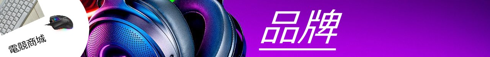

| 羅技logitech | |
| 羅技logitech是一家電腦周邊裝置和軟體製造商，總部位於，在歐洲、亞洲、大洋洲和美洲等一百多個國家或地區設有辦事處，是全球頂尖的個人電腦和其他3c產品輸入與介面裝置製造商之一。
該公司開發與銷售用於個人電腦之視訊協同運作、音樂與智慧型家居等數位周邊裝置。其中包括鍵盤、滑鼠、平板電腦配件、與通用等產品。 |
 |
| 華碩ASUS | |
簡稱華碩，英語譯名暨品牌名稱為ASUS，是源自台灣的公司，成立於1989年，總部位於台北市。其產品主要為家用與商務用桌上型電腦,筆記型電腦。 華碩亦曾為全球最大電腦OEM及ODM製造商。2023年其品牌價值達22.01億美元，位列台灣第一。 |
 |
| 微星MSI | |
中文簡稱微星，英文縮寫MSI。為源為台灣的製造商，成立於1986年8月，主要產品為電競筆電,顯示器,主機板。 2012年，發表電競筆記型電腦，以龍盾牌LOGO作為代表圖騰，紅黑配色為主要視覺設計。2014年，發表全球第一台配備機械式背光鍵盤的電競筆記型電腦。電競筆記型電腦為微星帶來知名度。 |
 |
